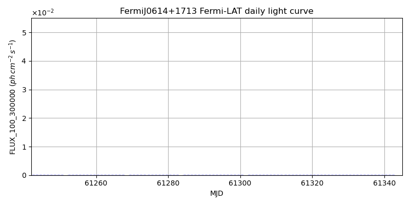
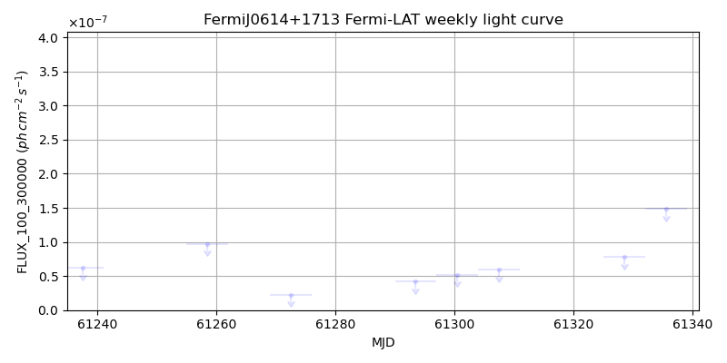
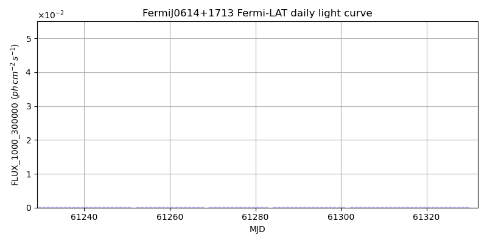
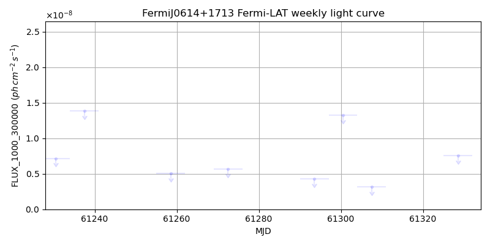

LAT Lightcurve site: https://fermi.gsfc.nasa.gov/ssc/data/access/lat/msl_lc/source/Fermi_J0614p1713
NED: Query
Time of last update of this page: UT: 2026-10-17 15:17 (MJD: 61330.637)
| Property | Value |
|---|---|
| R.A. | 6:14:31.20 |
| Dec. | 17:13:48.0 |
| z | 0.000 |
| 3FGL SpectrumType | |
| 3FGL PL Index | -1.00 |
| 3FGL Flux_100_300000 | -1.00e+00 |
| 3FGL Flux_1000_300000 | -1.00e+00 |
| 3FGL Flux >200 GeV | -1.00e+00 |
| 3FGL Extrap. Crab >200 GeV | -1.00 |
| 3FGL Flux After EBL Absorption >200GeV | -1.00e+00 |
| 3FGL EBL Crab Fraction >200GeV | -1.00 |

| MJD | dMJD | Flux | dFlux | Frac3FGL | FracCrab>200GeV | EBLFracCrab>200GeV |
|---|---|---|---|---|---|---|
| 61325.50 | 0.50 | 1.58e-07 | 0.00e+00 | 0.00 | 0.00 | -0.00 |
| 61326.50 | 0.50 | 5.30e-07 | 0.00e+00 | 0.00 | 0.00 | -0.00 |
| 61327.50 | 0.50 | 3.27e-07 | 0.00e+00 | 0.00 | 0.00 | -0.00 |
| 61328.50 | 0.50 | 6.14e-08 | 0.00e+00 | 0.00 | 0.00 | -0.00 |
| 61329.50 | 0.50 | 8.74e-08 | 0.00e+00 | 0.00 | 0.00 | -0.00 |

| MJD | dMJD | Flux | dFlux | Frac3FGL | FracCrab>200GeV | EBLFracCrab>200GeV |
|---|---|---|---|---|---|---|
| 61258.50 | 3.50 | 9.74e-08 | 0.00e+00 | 0.00 | 0.00 | -0.00 |
| 61272.50 | 3.50 | 2.28e-08 | 0.00e+00 | 0.00 | 0.00 | -0.00 |
| 61293.50 | 3.50 | 4.19e-08 | 0.00e+00 | 0.00 | 0.00 | -0.00 |
| 61300.50 | 3.50 | 5.19e-08 | 0.00e+00 | 0.00 | 0.00 | -0.00 |
| 61307.50 | 3.50 | 5.95e-08 | 0.00e+00 | 0.00 | 0.00 | -0.00 |

| MJD | dMJD | Flux | dFlux | Frac3FGL | FracCrab>200GeV | EBLFracCrab>200GeV |
|---|---|---|---|---|---|---|
| 61325.50 | 0.50 | 3.36e-08 | 0.00e+00 | 0.00 | 0.00 | -0.00 |
| 61326.50 | 0.50 | 3.99e-08 | 0.00e+00 | 0.00 | 0.00 | -0.00 |
| 61327.50 | 0.50 | 5.19e-08 | 0.00e+00 | 0.00 | 0.00 | -0.00 |
| 61328.50 | 0.50 | 1.79e-08 | 0.00e+00 | 0.00 | 0.00 | -0.00 |
| 61329.50 | 0.50 | 1.87e-08 | 0.00e+00 | 0.00 | 0.00 | -0.00 |

| MJD | dMJD | Flux | dFlux | Frac3FGL | FracCrab>200GeV | EBLFracCrab>200GeV |
|---|---|---|---|---|---|---|
| 61258.50 | 3.50 | 5.04e-09 | 0.00e+00 | 0.00 | 0.00 | -0.00 |
| 61272.50 | 3.50 | 5.63e-09 | 0.00e+00 | 0.00 | 0.00 | -0.00 |
| 61293.50 | 3.50 | 4.27e-09 | 0.00e+00 | 0.00 | 0.00 | -0.00 |
| 61300.50 | 3.50 | 1.32e-08 | 0.00e+00 | 0.00 | 0.00 | -0.00 |
| 61307.50 | 3.50 | 3.18e-09 | 0.00e+00 | 0.00 | 0.00 | -0.00 |
--------------------------------------------------------- Using user-supplied coords: 6:14:31.20 17:13:48.0 2000 --------------------------------------------------------- FLWO UT night of: 2026-10-18 Local Sid. @ Midnight: 01:23 Sunset (-15.0) (local, UT): 18:56 01:56 Sunrise (-15.0) (local, UT): 05:22 12:22 Moonrise (local, UT): Moonset (local, UT): 22:59 05:59 Moon phase: 0.47 --------------------------------------------------------- AzTime LSID UT Obj_el Obj_az Mn_el Mn_az Sep. --------------------------------------------------------- 18:56 20:18 01:56 -32.9 35.5 30.5 195.3 162.7 19:26 20:48 02:26 -28.9 42.4 28.5 202.5 162.6 19:56 21:18 02:56 -24.3 48.6 25.9 209.3 162.5 20:26 21:48 03:26 -19.3 54.2 22.6 215.6 162.3 20:56 22:19 03:56 -14.0 59.2 18.8 221.3 162.2 21:26 22:49 04:26 -8.4 63.7 14.5 226.6 162.1 21:56 23:19 04:56 -1.5 67.9 9.9 231.4 162.0 22:26 23:49 05:26 3.7 71.9 5.0 235.7 161.8 22:56 00:19 05:56 9.7 75.6 0.2 239.8 161.7 23:26 00:49 06:26 15.9 79.3 -5.5 243.5 161.5 23:56 01:19 06:56 22.2 82.9 -11.3 247.0 161.4 00:26 01:49 07:26 28.6 86.5 -17.0 250.4 161.2 00:56 02:19 07:56 35.0 90.4 -22.8 253.6 161.0 01:26 02:49 08:26 41.4 94.6 -28.7 256.7 160.7 01:56 03:19 08:56 47.7 99.3 -34.7 259.8 160.5 02:26 03:49 09:26 54.0 104.9 -40.7 263.0 160.3 02:56 04:20 09:56 60.0 111.9 -46.8 266.4 160.0 03:26 04:50 10:26 65.8 121.5 -52.8 270.1 159.8 03:56 05:20 10:56 70.8 135.5 -58.9 274.3 159.5 04:26 05:50 11:26 74.4 156.5 -64.9 279.6 159.2 04:56 06:20 11:56 75.5 184.1 -70.8 287.0 158.9 05:22 06:46 12:22 74.0 207.2 -75.7 297.1 158.6 --------------------------------------------------------- Dark hours >55 deg.: 2.85 srcstart (UT): 2026-10-18 09:31 srcend (UT): 2026-10-18 12:22